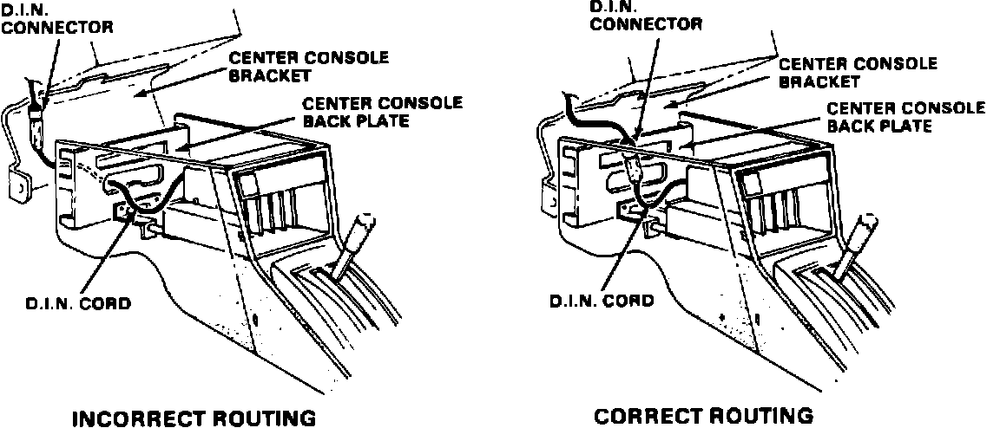

Radio - Volume Stays Low/Erratic Driving Over Bumps
87acura01November 2, 1987
YEAR MODEL APPLICATION
1986 INTEGRA up to VINs
LS DA1-GS005599
DA3-GS004498
87-029
Damaged D.I.N Connector (Supersedes 86-010, dated August 4, 1986)
SYMPTOM
The radio play's at low volume regardless of volum setting, AND/OR the radio volume suddenly increases or decreases as the car is driven over a bump.
CAUSE
The soldered connections in the D.I.N. connector where damaged when the D.I.N. cord was incorrectly routed between the center console bracket and the center console back plate.

CORRECTIVE ACTION
1. Remove the center console.
2. Replace the radio. (The radio described in PARTS INFORMATION includes a new D.I.N. cord.)
3. Route the new D.I.N. cord so that it will not be pinched between the center console bracket and the center console back plate.
4. Reinstall the center console
PARTS INFORMATION
Radio: P/N 08118-SD201AA
WARRANTY CLAIM INFORMATION
Operation number: 010107
Flat rate time: 0.6 hour
Failed part P/N: 39100-SD2-A01
Defect code: 066
Contention code: B01
Note: Use DCS "Quick Claim" format.